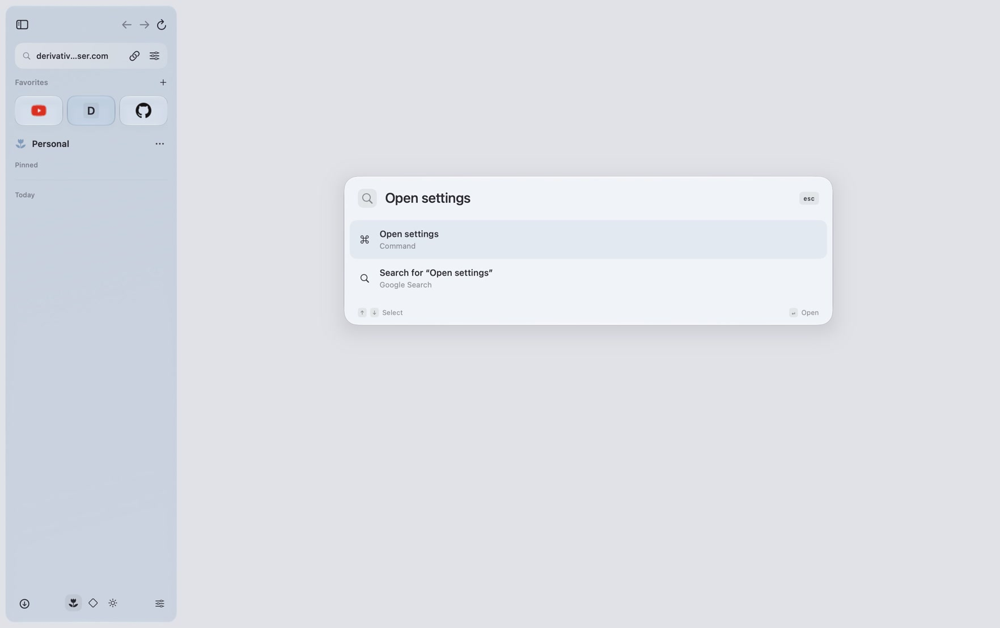
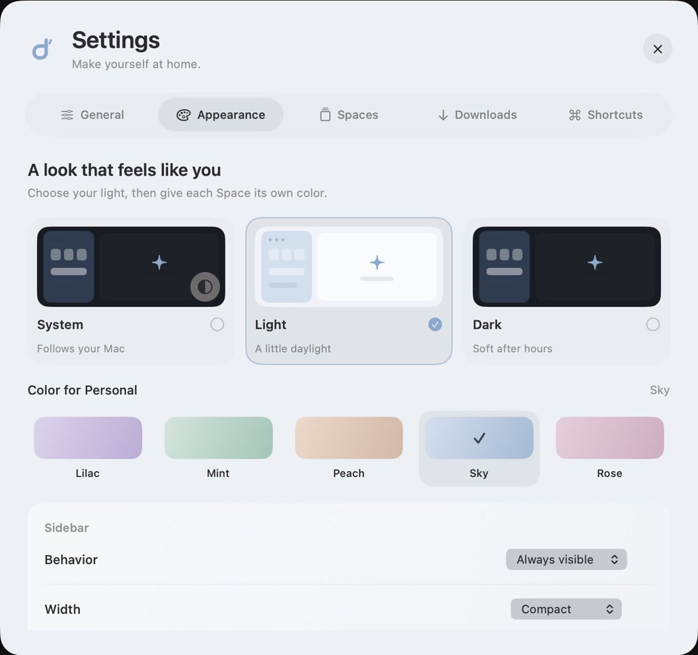

A place for every tab
Favorites up top. Pinned tabs and folders below. Your sidebar keeps the day in order.
Native to Mac. Open to everyone.
A Space for every part of your day.
Your favorite places, a little closer.
Free preview · Apple Silicon · macOS 14+


A place for every part of life
Give work, study, and your own time a place of their own. Each Space keeps its tabs and website sign-ins separate.
Pick a color. Set the mood.
Sky
The essentials
Favorites up top. Pinned tabs and folders below. Your sidebar keeps the day in order.
Find tabs, search the web, and run commands from a single floating search field.
Keep a reference next to your work with split view, inside the same window.
Made for Mac. Made in the open.
Derivative brings native SwiftUI and AppKit controls together with Chromium for the web. An open source project, shaped one detail at a time.
Explore the sourceDownload the macOS preview for Apple Silicon, open the DMG, and drag Derivative to Applications. Requires macOS 14 or later.
This preview is ad-hoc signed and not notarized by Apple, so macOS may block the first launch. See the release notes and installation guidance ↗ for details, a ZIP alternative, and checksums.
Prefer to compile it yourself? Build from source ↗
Derivative is early. Extensions, password management, sync, automatic updates, and private browsing are not implemented yet. Some sign-ins and DRM media depend on the Chromium distribution.
Tabs and organization restore after restarting. Website sign-ins persist within each Space. Unsaved forms, split arrangements, and download history last for the current app session.
Built in the open.
0.1.0-preview.1 · Apple Silicon · macOS 14+
Release notes & installation guidance ↗